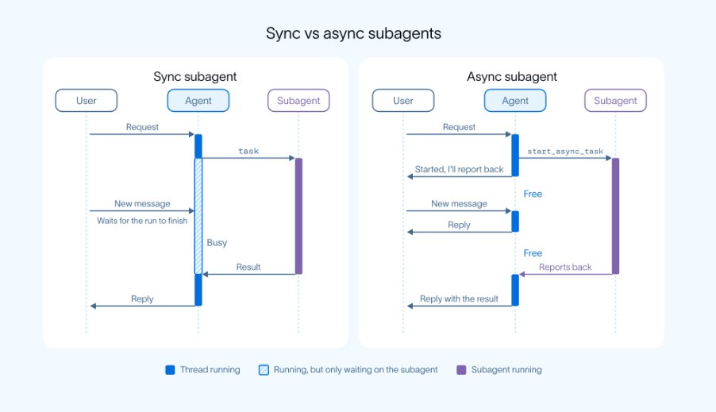
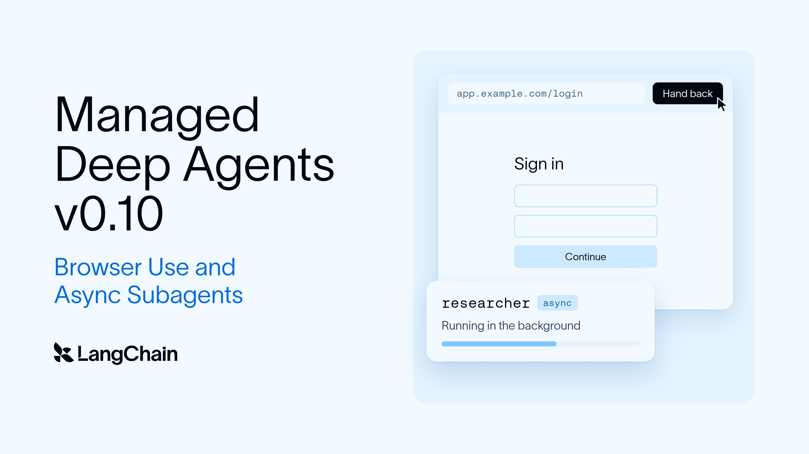
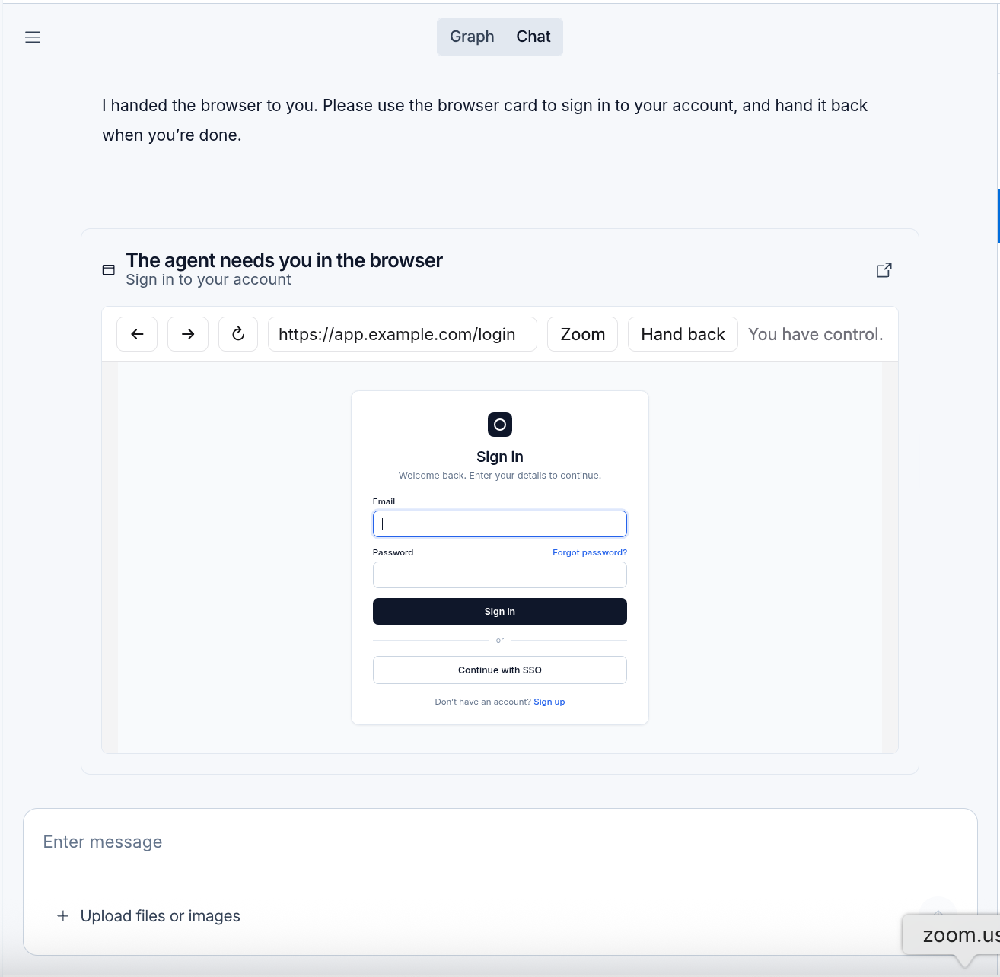

Managed Deep Agents v0.10：给 Agent 一个浏览器，把长任务放到后台
这篇是 LangChain 的版本发布文：Managed Deep Agents v0.10 加了两样东西。一是 browser use，让 agent 能在没有 API 的网站上干活；二是 async subagents，把长任务放到后台跑，agent 同时继续和你说话。文章先讲每样东西为什么需要、怎么打开，再列这一版的其他改动。
LangChain 原文 Smartpig 的 X 帖 已学：Agents Are Going Async 精读版（加密，全文对照） 全文讲解约 20 分钟
Smartpig：下一代 Agent 拼的是能不能同时推进多件事、让人一直握着控制权
这一节只讲 Smartpig 帖子里说了什么。他是在转述和评论两篇 LangChain 文章；帖中的五个工具名和两种改道策略出自《Agents Are Going Async》，不在本文（v0.10 发布文）里，本站已有那一页。
他开篇转述 LangChain 的观点：将来真正强的 AI Agent，必须学会异步工作。他认为这可能是 Agent 发展里一个被低估的拐点。
他先描述过去的用法：提一个任务，AI 开始干，你等结果，再提下一个。模型再聪明，这种方式也有个明显的问题：AI 在跑复杂任务时，往往没法及时回应你的新需求。他举的例子：让 Agent 读完 100 份行业报告做分析，可能要 20 分钟。这 20 分钟里你想加一个要求，或者想让它顺手把竞品数据也理一理，该怎么办？他说，按传统的同步执行架构，主 Agent 可能被跑得很久的工具调用或子 Agent 卡住，新任务只能排队等。他的评价是：这显然不是理想的智能助手。

01：主 Agent 负责沟通，子 Agent 在后台干活
他说 LangChain 正在改这种方式，并点名《Agents Are Going Async》介绍的 Deep Agents 异步子 Agent 架构。思路很简单：一个主 Agent 管沟通和协调，几个子 Agent 在后台各自执行。主 Agent 不用等每个子任务做完，就可以继续与你交流、接受新指令，甚至再开新任务。
他的例子是一个软件开发项目拆给四个子 Agent：Agent A 研究技术方案，Agent B 写后端，Agent C 设计前端界面，Agent D 跑测试查问题。这几件事在适当条件下可以并行；同一时间，主 Agent 还能回答你的问题、看执行状态、按新要求调整任务。他说这和「接了任务就一路跑到出结果」很不一样，主 Agent 更像协调多个专业成员的项目经理。
02：跑起来的任务还能被管理，重点是 update_async_task
他列了 LangChain 这次给的五个关键操作：
- start_async_task：开一个后台任务。
- check_async_task：看任务状态和结果。
- update_async_task：给正在跑的 Agent 发新指令。
- cancel_async_task：把跑着的任务撤掉。
- list_async_tasks：列出全部任务和状态。
他认为最值得看的是 update_async_task，因为现实里需求经常在做的过程中变。比如你本来让 Agent 用 MySQL 开发，做到一半改主意要用 PostgreSQL。他说传统工作流可能得等当前任务结束，或者整个流程重来；异步 Agent 则让主 Agent 在任务跑着的时候就能下发修改。LangChain 给了两种处理办法：Interrupt 停掉当前执行，按新要求重来；Enqueue 先把当前这轮做完，再处理新指令。他的结论是，Agent 不只是能接任务，还开始能被持续管理和调整。
03：后台任务做完会主动通知，按主 Agent 的状态分三种处理
他说的另一个变化是通知机制。过去很多 Agent 系统要反复轮询任务状态，才知道活干完没有；LangChain 的方案让后台子 Agent 做完后主动告诉主 Agent，再看主 Agent 当时在干什么：
- 主 Agent 正忙别的：结果在后面的步骤里收进来。
- 主 Agent 闲着：后台任务做完会触发它继续跑。
- 流程正等人审批：审批状态保留不动，后台结果不会打乱当前交互。
他认为这样 Agent 更适合做耗时长、依赖多的复杂工作，比如深度研究、代码开发、数据分析、多步骤的业务流程。三种情形与本文第 6 节的原表 2 对得上。
04：比模型变聪明更要紧的，是同时推进多少件事、人还管不管得住
他的看法是：过去几年大家过度盯着一个指标，单个 Agent 能做多复杂的任务。他在小标题里就问：这件事为什么可能比模型能力升级更重要？他的回答是，放到真实工作里，另一个指标可能一样重要：一套 AI 系统能并行推进几件事，同时让用户一直握着控制权。
他描绘的场景：早上让 AI 开始分析市场数据，之后它在后台整理报告、编写代码、运行测试；你随时看进度、加要求、取消没必要的任务；某个阶段完成后，AI 主动汇报，等你确认下一步。他说这已经不是传统意义上的聊天机器人，而是一套能不停协调工作的智能系统。
Smartpig 自己的限定：能异步，不等于能无限并行。几个 Agent 之间可能还会有这些麻烦：资源竞争、上下文不一致、任务依赖、权限冲突、成本增加。后台跑的时间越长，状态管理、可观测性、任务恢复、人工审批这几件事就越要做好。他的原话是异步架构「解决的是任务阻塞问题」，可靠性的问题并没有因此全部解决。
05：Agent 正在经历三个阶段，异步子 Agent 是第三阶段的一种实现
- 第一阶段：AI 回答问题。用户提问，模型给答案。
- 第二阶段：AI 执行任务。模型会调用工具、修改代码、搜索资料，把交代的活干完。
- 第三阶段：AI 协调任务。主 Agent 负责弄清目标、分配工作、跟踪进度、处理异常；几个子 Agent 同时各干一摊。
他认为 LangChain 的异步子 Agent 架构，就是实现第三阶段的一种办法。
他还说，走这条路的不止 LangChain，Claude Code 等 Agent 产品也在试后台任务和多 Agent 协作。他看到的共同趋势：AI 从等人下指令才动的工具，慢慢变成能一直干下去的任务执行系统。
未确认：「Claude Code 等也在探索」是 Smartpig 的说法。《Agents Are Going Async》原文也写了 Claude Code 默认在后台跑子 Agent，但这仍是 LangChain 的转述，本页没有去 Claude Code 官方文档独立核实。
06：最有价值的 Agent 未必最聪明，而是更会工作
他的判断：将来最值钱的 Agent，未必是回答一次最聪明的那个，而可能是能做到下面五件事的那个：
- 一个复杂目标能一直往前推。
- 几个互不相干的任务能同时处理。
- 人随时改方向，它能接住。
- 做到哪一步、卡在哪里，能清楚地讲给人听。
- 出问题时安全地暂停、恢复或交还控制权。
他对比过去和未来：过去我们关心 AI 能不能替我们办成一件事；未来可能更关心它能不能同时管十件事，而我们只负责关键决策。从 Synchronous Agent 到 Asynchronous Agent，看起来只是执行架构变了，但他认为这可能正在改变人和 AI 一起干活的基本方式。过去的 AI 像执行者，给任务、交结果；未来的 AI 可能更像项目负责人，能拆解复杂目标、协调几个执行者、跟踪任务进展，必要时主动请人拍板。
AI Agent 的下一阶段，不只是更聪明，而是更会工作。
Smartpig X 帖结尾出处：Smartpig · X 帖最后一句
他强调，要紧的不是让一个 Agent 同时开更多工具，而是让整个 AI 系统能持续协作、随时调整、交付靠得住。
帖子最后附了两篇 LangChain 原文的链接：一篇是 Agents Are Going Async（本站已有学习页），另一篇他称作 Deep Agents 的异步功能说明，就是本页讲的 v0.10 发布文。
补充：帖子和原文的出入。Smartpig 说的「这次更新」把两篇文章合在一起讲了。本文（v0.10）只说主 Agent 用一组 async task tools 启动、查看、更新和取消任务，没有列五个工具名，也没讲 Interrupt / Enqueue；这些在《Agents Are Going Async》里，那篇还写明 interrupt 是默认策略。帖子没讲本文的另一半：浏览器和登录交接（第 4、5 节）。
v0.10 加了浏览器和后台子 Agent，回复还会回到请求发起的 Slack 线程

Managed Deep Agents 是 LangChain 在 LangSmith 上托管运行 Deep Agents 的产品，本文宣布 v0.10 当天发布。文章开头的 Key takeaways 有三条：
- Browser use：agent 能在没有 API 的网站上订行程、提交理赔。网站要求登录时，agent 把浏览器窗口交给你，你的密码不会进模型的消息和 trace。
- Async subagents：长任务交给一个后台跑的 subagent，你的 agent 同时继续和你说话。你可以让 agent 去查这个任务、改它的方向；subagent 做完后，结果回到对话里。
- Thread origins and stopping runs：回复回到请求发起的那个 Slack 线程，包括定时运行和稍后才做完的 subagent 发出的回复。线程里有一个 Stop 按钮，可以取消这个线程的运行。
很多事只能在给人点的网页上办，agent 需要一个真浏览器
订行程、退订阅、提交理赔，都发生在给人一页页点的网站上，往往没有 agent 能调的 API。agent 能推理出该怎么办，却没法在没有 API 的网站上动手。用 curl 抓页面也走不远：它拿到的是 JavaScript 渲染之前的 HTML，agent 也点不了任何东西。
文章给的佐证：Instinct 和 Meta 的 Muse 这类个人 agent 能浏览网站，打开了更多用法；DataDome 观察到 agent 浏览器请求仅在九月就涨了 4.7x。编程 agent 也需要浏览器，用来确认对应用的改动真的能渲染、能用。
浏览器在哪些地方有用、底层怎么实现，作者放在另一篇《Browser use in Managed Deep Agents》里。打开方式是在 project root 声明一个浏览器：
# browser.py
from managed_deepagents import define_browser
browser = define_browser(scope="thread", idle_ttl_seconds=600)怎么读：文件名是 browser.py，引入 define_browser；scope="thread" 表示按对话分配浏览器，另一个参数从名字看是空闲多少秒后回收，这里写的是 600 秒，原文没有解释它。
Managed Deep Agents 把浏览器放在它自己的 LangSmith sandbox 里运行，并自动给 agent 加上四个浏览器工具：
| Tool | What it does |
|---|---|
| browser_snapshot | Reads the page's accessibility tree and assigns element IDs |
| browser_run | Navigates and interacts, through JavaScript or batches of actions against snapshot IDs |
| browser_screenshot | Captures the page, optionally saving the image to the sandbox |
| browser_handoff | Gives a person control of the window |
四个工具的分工：browser_snapshot 读页面的无障碍树，给元素编号；browser_run 负责跳转和操作，可以跑 JavaScript，也可以按 snapshot 的编号批量执行动作；browser_screenshot 截图，可选存进 sandbox；browser_handoff 把窗口控制权交给人。
默认每个对话有自己的浏览器，跨轮次复用，开局没有其他线程留下的 cookie 和登录。改用 scope="user" 后，每个已登录的人拥有一个浏览器，登录状态跨他所有对话保留，所以 agent 对同一个网站只需要请他登录一次。
遇到登录墙，agent 把窗口交给你，凭据不进模型
大多数浏览器 agent 碰到登录墙或两步验证就停了。用 browser_handoff，agent 改为把窗口交给你，于是你的密码不会出现在模型的消息或 trace 里。
流程：agent 调 browser_handoff(reason)，说明为什么需要你。Slack、Studio 这些 agent 渠道会给出一个链接，打开就能操作远程浏览器，旁边有 Hand back 按钮；自建客户端可以自己把这个交接内容画出来。你登录完、把控制权交回后，agent 会查看页面确认登录成功，再接着干。handoff 调用会立刻返回，agent 等你的时候可以做别的事。交接链接 15 分钟后失效。
原文这一句多打了一个 have，意思是渠道里会出现一个交接链接。

原文图注：agent 请你帮忙登录一个网站，在你点 Hand back 之前，页面由你控制。
作者的总结：handoff 让 agent 替你使用网页，却看不到你的凭据。
scope、按运行配置和完整的交接流程，见 browser use 文档。
长任务交给后台子 Agent，编排的 agent 不再被堵住
subagent（子 Agent）指 agent 把一项聚焦的任务交给一个有自己上下文窗口的帮手。之前在 Managed Deep Agents 里，subagent 是内联跑的：agent 调一个就等它回答。查点小东西这样没问题，现在也仍支持。但如果是一个背后是同步 agent 的长任务，或者要同时分派给多个 agent，和 agent 说话的人也得一起等，和编排 agent 的其他交互也被堵住。
v0.10 可以异步跑 subagent，不堵编排 agent。做法是在 subagent 定义里加上 async：
from managed_deepagents import define_deep_agent
agent = define_deep_agent(
name="research-assistant",
model="openai:gpt-5.5",
subagents=[
{
"name": "researcher",
"description": "Researches a topic in the background.",
"system_prompt": "Research the topic and report your findings.",
"async": True,
},
],
)怎么读：define_deep_agent 定义一个叫 research-assistant 的 agent，模型写的是 openai:gpt-5.5；subagents 里只有一个 researcher，description 说它在后台研究一个主题，它自己的系统提示词要求研究并汇报。和普通 subagent 的差别只在最后一行 "async": True。
agent 会在 subagent 自己的线程上启动它，subagent 跑着的时候 agent 继续和用户说话。编排 agent 用一组 async task tools 启动、查看、更新和取消这些任务。每个被托管的 agent 还自带一份 general-purpose subagent 的后台副本，所以它能在运行时自己决定，委派出去的活放前台还是后台。
async subagent 会自己通知 agent，agent 不用一直轮询。接下来怎么处理，取决于 subagent 做完那一刻 agent 在干什么：
| When the subagent finishes, the agent is | What happens |
|---|---|
| Busy | It checks unfinished tasks before each model call, so the result arrives mid-run |
| Idle | The subagent wakes it with a new run |
| Paused on an approval | The approval is left alone; the result arrives once the user answers |
原网页上这张表被压成了一段连续文字（表头和三行挤在一起）；这里按表头两列、三行还原，单元格文字未改。
三行的意思：agent 忙着时，它在每次调用模型前检查未完成任务，所以结果在这一轮中途就到；agent 闲着时，subagent 用一次新的运行把它叫醒；agent 停在一个审批上时，审批不动，等用户回答后结果才到。
async subagent 和 agent 共用同一个 sandbox，所以能拿到 agent 已经写好的文件。它的运行记录挂在 agent 那次运行下面，在 LangSmith 里看得到。在 Slack 里，它要的审批会发回原线程，在那里回答就能让 subagent 继续。
线程记住自己从哪来，Slack 可以停、可以自带应用，旧的连接器写法被移除
runtime.thread：每个线程都记录自己从哪开始（比如某个 Slack 线程）、有谁在里面。工具在任何一次运行里都能读runtime.thread；Studio 里恢复的运行、定时运行、async subagent 的唤醒运行，正是靠它回复到原来的 Slack 线程。工具能读哪些托管字段，见 runtime 文档。- Stopping runs：Slack 线程有原生 Stop 按钮，取消这个线程的运行；Studio 也能取消 Slack 线程上的运行。
- Slack channel handlers（experimental，实验性）：
onEvent决定每个 Slack 事件启动什么，包括提及、私信、其他消息和按钮点击；status设定运行期间 Slack 显示什么；reply: "none"把回复交给 agent 自己处理。 - Bring your own Slack app：
mda deploy会问新的 Slack 渠道用哪个应用。可以选 LangSmith 创建并管理的，也可以按 manifest 新建一个，或者用你已有的。 resolveUser：有人在 Slack 这类渠道给你的 agent 发消息时，Managed Deep Agents 会核实发送者是谁；resolveUser把这个发送者对应到你自己系统里的用户，工具就能查到这个人的账号和权限。它可以写成函数，也可以指向一个由他们调用的 endpoint；设在 identity 声明上覆盖所有渠道，或者只设在单个渠道上。- Breaking changes（破坏性变更）：
connectors.mcp()和connectors/目录结构被移除，MCP server 必须声明在tools/mcp.ts或tools/mcp.py里；sandbox 的scope选项也被移除；LANGSMITH_*变量现在以 shell 环境变量为准，压过项目里的.env。
注意区分：被移除的是 sandbox 的 scope 选项；第 4 节浏览器的 scope（thread / user）不受影响。
v0.10 今天进入公开测试，三条命令起一个项目
Managed Deep Agents v0.10 当天以 public beta（公开测试版）发布。可以从文档开始，或者新建一个项目：
uvx --from managed-deepagents mda init my-agent
cd my-agent
uv run mda deploy三步：先用 uvx 临时运行包里的 mda init my-agent 生成项目，进入目录，再部署。
结尾作者说很期待听大家用它做了什么，并顺带提了上一版：v0.9 加了 agent 自己创建的定时任务、按运行配置和 Slack 表情回应，附了 v0.9 的文章链接。
原文里的全部链接（按出现顺序）：
- Managed Deep Agents
- browser use
- async subagents
- Instinct
- Muse
- DataDome
- Browser use in Managed Deep Agents
- project root
- LangSmith sandbox
- browser tools
- scope="user"
- signed-in person
- browser_handoff
- Subagents
- run subagents asynchronously
- async task tools
- general-purpose subagent
- notify the agent
- sandbox
- LangSmith
- approvals
- runtime docs
- Slack channel docs
- docs
- Read the v0.9 post
- Smartpig 帖中短链 1（指向 Agents Are Going Async）
- Smartpig 帖中短链 2（指向本文）
三道题，专打容易混的地方
答错只标你选的那一项，不揭晓答案；回看对应小节再试。